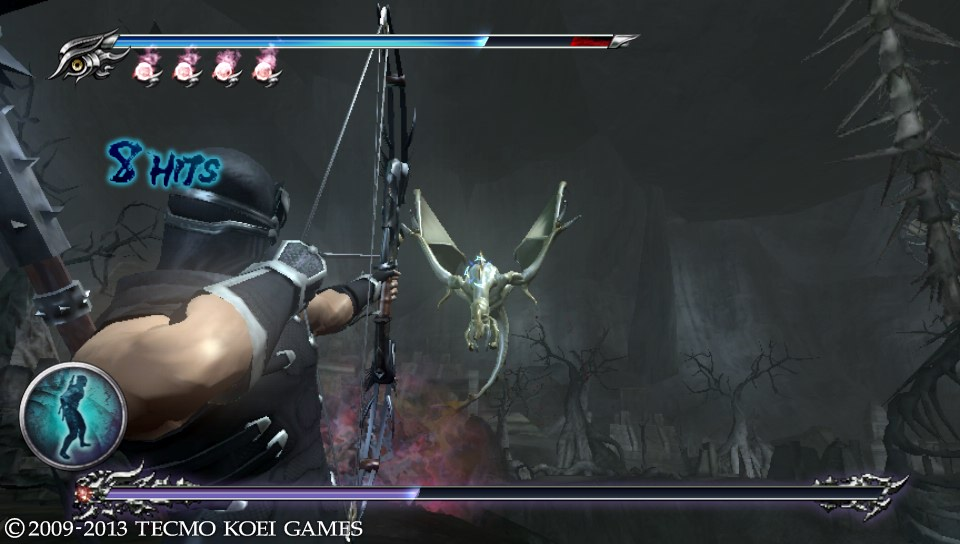

Gameplay
Ninja Gaiden ontwikkelt haar verhalende draad door de acties van de speler bestuurd hoofdpersoon, Ryu Hayabusa . Gezien vanuit een third person over-de-schouder perspectief, in de typische actie-adventure mode Ryu start het spel met basic, low-level vaardigheden en wapens die kunnen worden uitgebreid als hij vordert, door het ontdekken of het kopen van artikelen. In overeenstemming met zijn ninja persona, kan zijn karakter interactie met de spelomgeving aan acrobatische hoogstandjes, zoals die langs en springen van muren, swingende van pool tot pool, of lopen over water uit te voeren. [2] De game wereld is opgebouwd uit verscheidene verschillende gebieden, [3] meeste zijn verbonden via de stad Tairon, die functioneert als een hub. [4] de toegang tot deze gebieden worden verkregen door te vechten vijanden vinden sleutels of oplossen van puzzels, geïnspireerd door de monteurs van de The Legend of Zelda games. [2] [5] Dragon bustes verspreid over de regio's de middelen voor de speler voortgang op te slaan, waardoor de gameplay op een later tijdstip worden hervat.
Bewegingen van Ryu's zijn gericht met behulp van de console gamepad . Het spel van de besturing, waarbij de linker omvat thumbstick , twee aanval knoppen, en een blok knop, werd beschreven als vloeistof en responsief, [6] [7] en Ninja Gaiden werd beschouwd als het hebben van een van de diepere combat motoren onder Xbox- games op de tijd, goed vergelijken met de PlayStation 2 action-adventures God of War en Devil May Cry . [8] [9] [10] Eric Williams, de ontwerper van de God of War combat engine, legde uit dat Ninja Gaiden verbiedt spelers uit het stoppen of het wijzigen van aanslagen in het midden van een beroerte. In contrast, God of War stelt spelers in staat om dit te doen, en Devil May Cry verleent deze vrijheid om bepaalde aanvallen. Williams zei dat, in vergelijking met die twee wedstrijden, het vechtsysteem in Ninja Gaiden was moeilijker te beheersen; Maar het laat spelers vechten hun computergestuurde vijanden op gelijke voet. [8]

Ninja Gaiden beschikt over een grote selectie van wapens voor Ryu te hanteren, elk met voor- en nadelen die de manier waarop de speler benadert gevecht beïnvloeden. Deze omvatten one-handed zwaarden, zoals de Dragon Sword en Kitetsu, die een snelle aanvallen te verlenen en een beweging genaamd de "Flying Swallow", die het mogelijk maakt Ryu te springen en slash door vijanden. Naast deze lichte wapens toestaan Ryu om vijanden smash in de grond en zijn handtekening Izuna Drop-een draaiende te voeren piledriver . Zware wapens, zoals de Dabilahro en de Unlabored gaafheid, zijn traag, maar leiden tot meer schade aan tegenstanders. Met klepels en notenbalken , kan de speler achter elkaar lange sequenties van aanslagen. Naar verre vijanden nemen Ryu kan gooien shuriken en schieten pijlen. [2] [11] Naast het gebruik van standaard melee technieken, Ryu kunt inzetten essences gekleurde bollen van de energie die vrijkomt bij het overlijden van vijanden en opgenomen in Ryu's lichaam toen hij komt nabijheid met hen. Essences hebben een belangrijke rol in het algemeen gameplay, handelend naar Ryu te genezen, te herstellen zijn magie, of het verhogen van zijn geld. In gevecht de speler kan leiden Ryu opzettelijk trekken essences, die vervolgens kan worden gebruikt om krachtige aanvallen zogenaamde Ultimate technieken waarmee Ryu vijanden zonder schade zelf beschadigen ontketenen. [12] Deze technieken maken zware beschadiging en Ryu immuun schade kortstondig. [13]
Ninja Gaiden ook Ryu met magische spreuken in de vorm van ninpo spreuken. Wanneer geactiveerd door de speler, deze maken Ryu cast vuurballen, ijs stormen, of bliksemschichten. Functioneren in een soortgelijke wijze als de bommen of granaten van shooter actie games , deze spreuken laten Ryu tot zware schade toebrengen aan vijanden terwijl potentieel het vermijden van schade aan zichzelf. [14] Maar, ontevreden met hun geprogrammeerde visuele effecten, de game director Tomonobu Itagaki wilde ontmoedigen spelers van het gebruik van ninpo. Hij daarom getweaked het spel toe te kennen bonuspunten als spelers etappes gewist zonder inzet van magie. [15] Voor de verdediging van Ryu's, de speler heeft twee opties. Ten eerste kan Ryu stil te staan en proberen om aanvallen te blokkeren. Toch kunnen bepaalde vijanden zijn hoede-ofwel doorbreken bijzonder sterke aanvallen of worstelen hem. De tweede optie is om Ryu ontwijken maken door wegrollen van de aanval in een manoeuvre genaamd "reverse wind". [16]